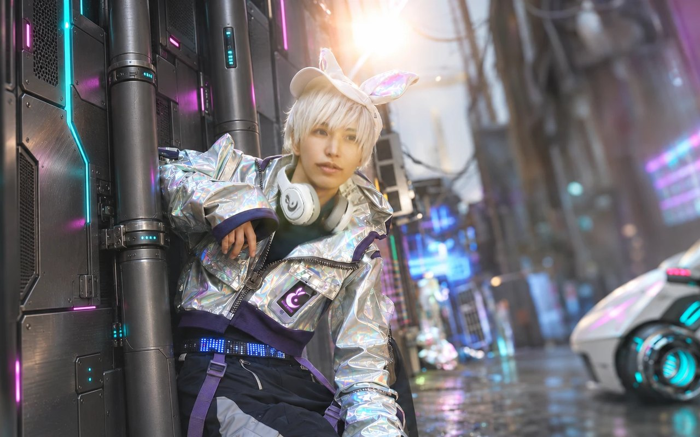
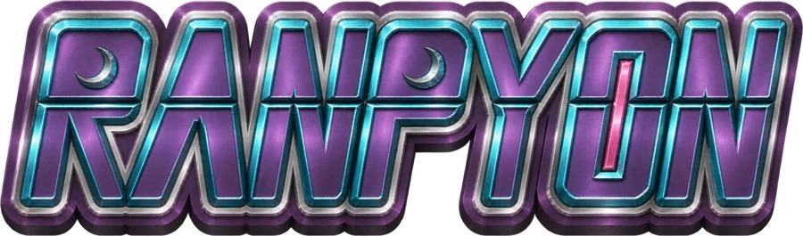

MOONIAN / 01ツッコミ担当RANPYON
らんぴょん ✧
地球人とムーニアン（月人）のハーフ。
自分の「好き」を形にする、クリエイターなツッコミ担当。
スターシードとして、愛と気づきを広めに地球へ。
- BIRTHDAY
- 7月21日
- CREATE
- 造形・3DCG・映像・デザイン
らんぴょんをもっと知る ＋
スターシードとして
らんぴょんは、「スターシード」と呼ばれる存在。人々に愛や気づきを広め、新しい価値観をもたらす存在です。地球や人類全体が、より高い次元・意識状態へ移行する「アセンション」をお手伝いするために来ました。
らんぴょんは、ものづくりを通して「自分の好きを信じていい」という気づきを届けています。
好きなこと・得意なこと
こんな人
完璧主義者で、スーパーポジティブ。ちょっと変わり者で、超幸運人間。頑固で、負けず嫌いな一面も。
お笑いの原点
憧れの芸人は、もう中学生さん。もう中学生さんのネタにインスパイアされて、自分でもネタを作るように。
「もう中学生さんと一緒に仕事がしたい」という思いが、NSCに入学したきっかけです。
地球でのプロフィール
吉本興業所属・東京NSC27期。阿波弁と関西弁を交えた言葉で、地球のみんなと交流しています。
吉本公式プロフィール ↗